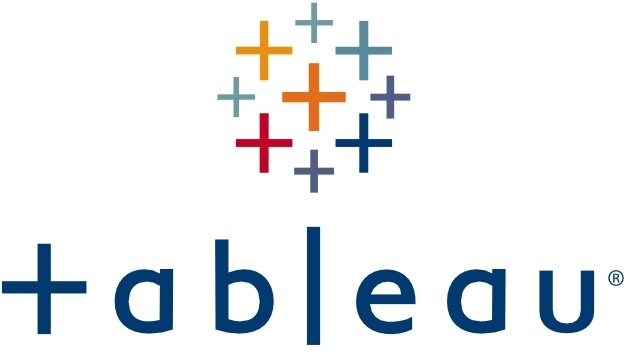

This Project focused on the Data Wrangling Process used in Data Analytics. Using libraries such as NumPy, Pandas, BeautifulSoup
and Json, each step of the Wrangling Process (Gathering, Accessing and Cleaning) was applied to a dataset obtained from the
tweet archive of Twitter user known as WeRateDogs. The matplotlib library was then used to visualize insights
from the cleaned data.


Performed an exploratory analysis of 4,024 patients with infiltrating duct and lobular carcinoma breast cancer diagnosed from 2006–2010 in MySQL. The dataset was obtained from the November,2017 update of the SEER Program of the National Cancer Institute (NCI) which provides information on population-based cancer statistics.

Explored a dataset containing loan information of approximately 113,937 loans with the help of Python libraries such as Numpy and Pandas. Produced Univariate, Bivariate and Multivariate visualizations of the insights using the seaborn and matplotlib libraries.

Selllocked is an electronic store that buys New or Used iPhones. In this Project , a web scrape of their customer reviews from their site page on trust pilot was performed using the python libray BeautifulSoup. The data gathered can be used for consumer analysis to help companies to gain an understanding of what their prospective clients or customers like or hate.

Tableau Dashboards built for Breast Cancer and Monkey Pox SQL Exploration Projects .
Perfromed an Exploratory Analysis in MySQL, of the monkey pox outbreak with a dataset obtained from Kaggle.